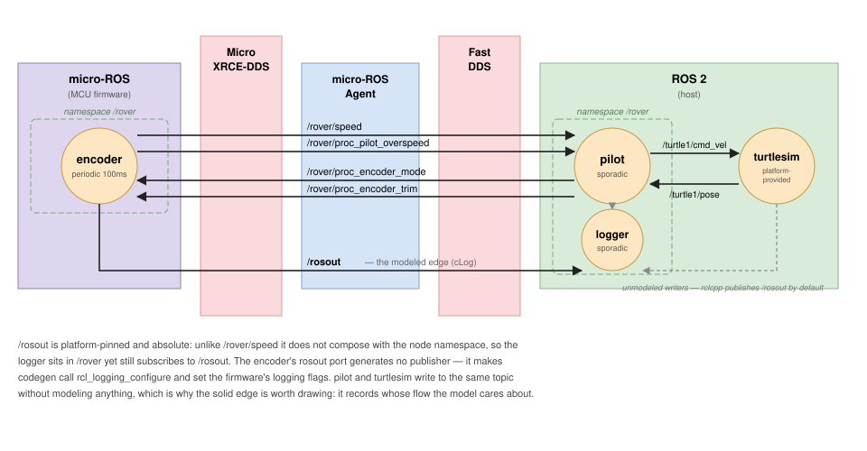

Chapter 3 of 4 in HAMR ROS 2 Development.
Every port in the previous two chapters is one the model declares and code
generation realizes: generation creates the publisher or the subscription,
and your application code drives it through a generated put_/get_ API.
Some ports are not like that. The ROS platform already provides certain
communication paths — every node has a /rosout log publisher, wired to the
rcl logging infrastructure rather than to anything you write. A port that
names one of these does not declare a new thing. It refers to one that is
already there.
This chapter is about that distinction, why the model bothers to mention such a
port at all, and what generation does with it. rosout is the implemented
instance; the same reserved-name scheme is intended to extend to
parameter_events and clock.
The Need
Take the system from ROS 2 Topic Naming and add an ordinary requirement: we want to collect the log records the encoder produces.
The encoder is a micro-ROS node, and this is where it gets interesting — because the answer differs by node kind, and the difference is invisible in the model until you go looking for it.
An rclcpp node publishes its log records to /rosout automatically. You get
that for free; pilot has done it since chapter 1 without anyone modeling
anything.
A micro-ROS node does not. Its logging is console-only unless rcl logging
is explicitly configured, and on an MCU “console” may mean a serial line nobody
is reading. The encoder’s LOG_INFO calls have been going nowhere useful this
whole time.
So the requirement lands on the one node where it takes actual work.
Three Ways To Get It
Do nothing. The encoder logs to its console and the records stay on the MCU.
Hand-wire it after generation. Call rcl_logging_configure yourself in the
preserved user-code block, and set the firmware build flags by hand. This works.
What it does not do is leave any trace in the model that log collection is part
of the system — the next person to read the model sees a node that does not log,
and the next regeneration of the firmware configuration does not know to keep
the flags on.
Declare the port. Add an out port named rosout to the encoder, and an in
port named rosout to a node that consumes the stream. This is the subject of
the rest of the chapter.
The Model
turtle-control-logging extends the naming variant with one new node and two
new ports.
The complete source for this variant — all three .sysml files — is on the ROS 2 Example Models page.

The producing side, on the encoder:
out port rosout : EventDataPort {
out :>> type : rcl_interfaces::Log;
attribute :>> Port_Provenance = Provenances::Infrastructure;
attribute :>> Ros_Topic_Name = "/rosout";
}
Both attributes are optional. The reserved name rosout already implies
them, and generation rejects any other value for either — they are written out
here because this is the variant that teaches the mechanism.
The consuming side, on a new logger node:
part def Logger :> Thread {
in port rosout : EventDataPort {
in :>> type : rcl_interfaces::Log;
}
attribute :>> Dispatch_Protocol = Sporadic;
attribute :>> Ros_Node_Kind = ros2;
}
And the connection between them:
connection cLog : PortConnection connect encoder.rosout to logger.rosout;
What the reserved name constrains
Because rosout refers to a platform-provided path rather than declaring one,
the model is not free to describe it however it likes. Generation enforces:
- the port must be an
EventDataPort - it must be typed
rcl_interfaces::Log - its topic is pinned to
/rosout, so the path-derived naming of chapter 2 does not apply, and a conflictingRos_Topic_Nameis an error
Only the name is reserved. A port called anything else carrying
rcl_interfaces::Log is entirely ordinary — a log relay that republishes
filtered records on its own topic is modeled that way, with no restrictions at
all.
Why Log has no fields
rcl_interfaces::Log is declared as a platform-provided type with no mirrored
fields:
package rcl_interfaces {
part def Log :> Data {
attribute :>> Type_Provenance = Provenances::Platform_Provided;
}
}
As in chapter 1, this means no .msg file is generated and rcl_interfaces
becomes a dependency of the generated package. The type exists in the model
because a port carries it, and that is all it needs to do here — nothing in this
system reads a log record’s contents at the model level.
Note also that no node constructs a Log. Records are produced by the
logging infrastructure, not by application code, so the absence of an example
builder for an opaque type costs nothing on the producing side.
What Generation Produces
This is where the chapter’s point lives, so it is worth being precise about it.
On the producer: configuration, not a data plane
The encoder’s rosout port produces no publisher and no put_rosout API.
What it produces is setup. In the generated initialization:
// Route this node's own log records to /rosout. Requires the firmware to be built
// with RCL_LOGGING_ENABLED=ON and a logging backend ...
RCL_CHECK(rcl_logging_configure(&self->support.context.global_arguments, &self->allocator));
and, in the generated colcon.meta that configures the firmware build:
"-DRCL_LOGGING_ENABLED=ON",
"-DRCL_LOGGING_IMPLEMENTATION=rcl_logging_spdlog"
These follow the model. Generate the naming variant, which has no rosout port
anywhere, and the same file reads RCL_LOGGING_ENABLED=OFF with the
rcl_logging_noop backend. The port’s presence is the switch.
The clearest evidence that no data plane was created is in the entity pool sizes generated alongside:
"-DRMW_UXRCE_MAX_PUBLISHERS=2",
The encoder has three out ports — speed, overspeed, and rosout — and needs
two publishers. The infrastructure port is not among them, because the path it
names already exists.
On the consumer: an ordinary subscription
Nothing about /rosout is automatic on the receiving side. Subscribing is a
property of one port, not of the topic, and the in port generates exactly what
any other in event data port would:
proc_logger_rosout_subscription_ = this->create_subscription<rcl_interfaces::msg::Log>(
"/rosout",
...
std::bind(&proc_logger_base::handle_rosout, this, std::placeholders::_1), subscription_options_);
The logger is Sporadic on purpose. rosout is an in event data port, so each
arriving record dispatches the thread and every record is processed. A data port
here would sample the newest record and drop the rest, which for a log is
exactly wrong.
The topic does not compose with the namespace
The logger is declared with Ros_Namespace = "rover" like the other generated
nodes, and generation honours that for the node itself:
proc_logger_base::proc_logger_base() : Node("proc_logger", "rover")
But the subscription above is to /rosout, not /rover/rosout. Unlike
encoder.speed in chapter 2, whose relative name composed with the namespace to
give /rover/speed, /rosout is absolute and platform-pinned. The namespace
moves the node; it does not move this topic.
The connection generates nothing
cLog produces no generated output whatsoever. Delete it and the generated
tree is byte-identical.
That is not an oversight. Both endpoints are pinned to /rosout and each side’s
code is fully determined by its own port, so there is nothing left for the edge
to decide — not even type agreement, since port validation independently forces
rcl_interfaces::Log on both ends.
So why draw it?
Because /rosout is a many-writer topic. pilot publishes to it, turtlesim
publishes to it, and neither models a thing — rclcpp does that by default. The
logger receives all of it. On a topic that everything writes to, the connection
is the only place the model can state which producer’s flow the system is
actually about. Here that is the encoder, because the encoder is the one whose
logging had to be deliberately enabled.
This is worth sitting with, because it is unusual: a modeling element that generates nothing and is still worth adding. The generated code is the same either way. What differs is whether the intent survives.
Why The Logger Is An rclcpp Node
Deliberately. A micro-ROS consumer of /rosout faces two problems this example
would rather not teach around:
rcl_interfaces::Logcarries unbounded strings —name,msg,file,function— so a static subscription buffer needs capacity configured for the largest record you expect to receive, and records that do not fit are dropped without a diagnostic.- Subscribing to
/rosoutpulls the union of every node’s log traffic across the agent link, which is a real cost on a constrained transport.
Neither is a reason you cannot do it. Both are reasons to size it consciously.
The Silent Handler
The generated skeleton for handle_rosout does something the other handlers do
not — it declines to log:
void proc_logger::handle_rosout(const rcl_interfaces::msg::Log::SharedPtr msg)
{
// Handle rosout msg
// Deliberately does not log. This node subscribes to /rosout, and a ROS node
// publishes its own log records there -- so logging here would feed this handler
// its own output and run away. Write records to a file, a socket, or stdout;
// anything routed through the ROS logger comes back.
}
Every other generated handler logs what it received, which is how you watch the
system run before writing an implementation. Here that would be a feedback
loop: LOG_INFO goes to the node’s ROS logger, an rclcpp node publishes its
logger output to /rosout, and this node subscribes to /rosout. Each record
handled produces another record to handle.
The hazard is a genuine property of /rosout rather than of HAMR, and it
applies to anything you write in that handler — so it is worth knowing. But the
generated code will not lead you into it.
What This Chapter Added
- A port that refers rather than declares.
encoder.rosoutnames a path the platform already provides. It generates configuration, not a publisher. - A node-kind difference made explicit. rclcpp gives you
/rosoutfor free; micro-ROS does not. The model is how you ask for it, and the firmware flags follow. - A reserved name with rules.
EventDataPort, typedrcl_interfaces::Log, topic pinned to/rosout. Any other port name carryingLogis ordinary. - A connection that generates nothing and still earns its place, by recording which producer’s flow the system cares about on a topic everything writes to.
Current Limitations
rosoutis the only implemented infrastructure port. The reserved-name scheme is designed to extend toparameter_eventsandclock; those are not implemented.- A micro-ROS
rosoutconsumer needs manual buffer sizing. Generation does not size static receive buffers forLog’s unbounded strings. - The producing side is enablement only. There is no generated API for
emitting a record to
/rosoutdirectly; records come from the logging macros.
Next
Building and Running ROS 2 Systems covers the generated workspace, the micro-ROS firmware build, the agent, and running the result.